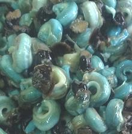

[Periwinkle (West Africa); Isam, Nifn (Nigeria); Tympanotonos fuscatus]
From all the photographic evidence I have seen, the West African "Periwinkle" is not a Periwinkle at all, but the West African Mud Creeper. This brackish water snail is very common from Senegal to Camaroon and IUCN listed LC (Least Concern). There are several varieties, so exact shell decoration varies.
All photographic evidence I have seen also shows their flesh to be a very unappetizing blue green color - nonetheless, it is a very popular inclusion in soups and stews, particularly in Nigeria. Photo by H. Zell distributed under license Creative Commons Attribution-ShareAlike v3.0 Unported.
More on Culinary Snails.
 In West African markets, these snails are usually shelled by the vendors, right there in the market. They appear as in the photo to the left, but often more greenish. Given how easily they are scooched out of their shells, I'm pretty sure they have been given a short boil before shelling. Photo by Samuel H. Eloi used under Fair Use doctrine - small, cropped, educational non-commercial, otherwise unavailable.